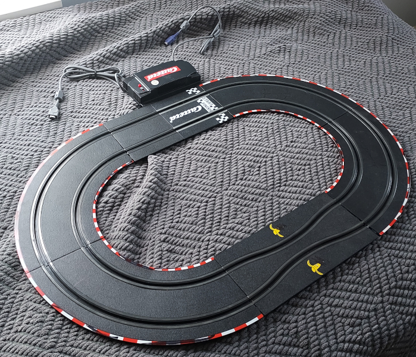

Shifting Gears
2021 was something of a lost year for me. I only managed to push out one article about the Pokemon Mini, even though it was a fairly large and comprehensive one. Still, during that time I was researching and emulating hardware such as the Magical Watch, GB Memory Cartridge, and Joy Carry Cartridge. However, due to issues at my old job, I just didn't have the right work/life ratio to write about anything regularly. Now that my situation has improved, I have an opportunity to share one of the earliest items from my backlog. It's time to get back to business, revving up the old engines for another exciting project, racing against time to preserve video game history.
In the world of slot cars, Carrera is a well-known brand, having dominated German markets throughout the 60s and 70s. Today, Carrera continues selling a variety of cars and tracks at popular scales such as 1:32 and 1:43. They offer many licensed models from automotive companies such as Ferrari, Porsche, BMW, and most notably characters and settings from Nintendo's own Mario franchises. Before Carrera started making courses based on the popular plumber's games, however, they created their own specialty piece of hardware for the Game Boy Advance.
Known as the Virtureal Racing System (VRS) and released exclusively in Europe in 2003, this "motor driver" as it was called allowed players to directly hook up their GBAs to the racetrack itself. From there, the handheld could control the slot car, moving it along the track with the push of a button. Carrera released a full-fledged GBA game - Carrera Power Slide - where players raced virtual slot cars on digital tracks. More importantly, however, the software had an additional mode specifically tailored for the VRS, featuring 7 different racing modes. Players could enjoy challenges such as racing to complete the most laps in a given time limit or being the first car to run a full lap ahead of the competition. All of this happened on courses built by the players themselves, giving them freedom and creativity to race however they wanted.
The VRS stands as yet another impressive attempt to bridge the gap between real-life toys and video games on the GBA. Although its execution differs from the Battle Chip Gates, the Soul Doll Adapter, the Multi Plust On System or Cyber Drive Zoids, it still fits a common theme present in many peripherals released for the handheld. Interacting with or directly controlling external bits of plastic and circuitry seems to highlight a sort of shared vision between all of these products.
Back of the Pack
Getting my hands on the VRS took quite while back in 2020. As COVID-19 was surging, various international mail services were either halting deliveries altogether or shipping via fast, private (and expensive!) carriers or slower sea-based options. By the time I had paid for my VRS on eBay, the seller's shipping options had unexpectedly changed after the purchase was complete. Fortunately, they were quite flexible and provided me with a slow choice for no additional cost. During the wait, I tackled the Magic Reader for the NDS and put researching the VRS on hold. Even when it finally came in the fall of that year, I still needed additional parts: a race track, a power adapter, and a slot car. It wasn't until early 2021 that managed to source all 3 in a single package for a decent price. Overall, progress was delayed well over 8 months.
The VRS itself looks like a very standard "motor driver" or "connector" for Carrera tracks. It shares a lot similarities with parts such as the Carrera 61512, with ports for hand-controls and input for external power. Unlike other motor drivers, however, the VRS has a bulkier build and sports two GBA Link Cables at either end. It also has an LED that indicates power and data transfers for GBA communication. Officially speaking, the VRS is known as the Carrera 20802. There are several boxed sets for the VRS. The most basic, such as the one I purchased, features the just the motor driver. The other sets came with their own massive tracks filled with twists, turns, and loop-de-loops. The ultimate set, the Carrera 20805, had all this and included the GBA game Carrera Power Slide.
The VRS by itself. Unconnected to a track, it looks like a standard Carrera motor driver.
Until I began working on the VRS, I hadn't touched a slot car in well over 25 years. I vaguely remember playing around with them in my younger years at a cousin's house, but even then I was more interested in their Genesis and SNES (yes, they had both). Who could ever imagine two worlds - video games and slot cars - would combine like this? At any rate, it wasn't difficult to set up the VRS and create a basic test track. Nothing fancy was built, just a short elliptical course. The VRS does not actually require the GBA to function as a normal motor driver for a track. It works just like any other ordinary slot car set up, with the hand-controls moving the vehicles along. A few laps around the track demonstrated that my VRS was running properly in that regard, so I moved on to testing the GBA connectivity.
Carrera Power Slide features a mode quite plainly labeled "Carrera Racing". This allows the GBA to link with the VRS, and as such it became my first target to investigate. When this option is first selected on the GBA, the software switches all serial communication to 16-bit Multiplayer, or Multi16 for short. Multi16 is typically used for 4-player data transfers, but it can also be used for MultiBoot transfers. In MultiBoot, only 1 GBA has a cartridge copy of the game and acts as the host; the other GBAs download temporary code and data to RAM as clients. When using the VRS, the first racer's GBA must have Carrera Power Slide inserted, while the second racer's GBA downloads information via MultiBoot. The process takes a while, just under a full minute, but once that's complete, both racers will have menus and controls specifically designed to race slot cars through the VRS.
The simplest racing mode provided by Carrera Power Slide is Free Run. There are no time limits or lap limits, making it the most suitable for testing. Since the VRS uses Multi16 mode, it's very easy to spy on all communications between the first GBA and the device itself. In Multi16 mode, every participant receives data from the other connected units. By plugging in a second GBA running homebrew, it can see each and every transfer the first GBA broadcasts, as well as the response from the VRS. The second GBA doesn't need to send any useful data, and in that case Carrera Power Slide and the VRS are designed to ignore it. In effect, the second GBA can eavesdrop without interfering. Unfortunately, since the second GBA occupies one of the VRS' Link Cables, only 1-player racing could be tested with this method. It was still an excellent start though.
Carrera Power Slide will try to let another GBA download the "Real Racing" software to play along with the VRS.
I wrote a quick homebrew ROM to capture and display the results of any transfers sent from the first GBA. Immediately, I noticed that the first GBA appeared to be sending commands for acceleration whenever I pushed the A button. With results ranging from 0xFF41 all the way to 0xFF47, for example, Bits 0 - 2 evidently controlled the slot car speed. As I logged more data, I found that there were additional values used for turbo boosts, such as 0xFFCF, so altogether Bits 0 - 3 are used for the final speed. The upper 8-bits never changed and were always set high.
Bits 4 - 7 seemed to function as an ID for whichever lane the GBA was trying to control. Lane 1 would return alternating values of 0xFF4- and 0xFFC-. On the other hand, Lane 2 would return alternating values of 0xFF5- and 0xFFD-. Interestingly enough, the GBA could control either lane. That is to say, the first GBA was not limited to controlling the first lane, nor was the second GBA limited to controlling the second lane. Lane usage was apparently not hardwired; rather it was entirely up to software to send the correct ID bits.
While analyzing the first GBA, it became clear that the VRS itself was acting as if it too were a GBA. In Multi16 mode, the first GBA takes on the role of the "parent" device, and all subsequently connected GBAs are "children". The VRS takes the place of Child 1, while the GBA I used for spying was designated as Child 2. This setup isn't all that different from the Battle Chip Gates during multiplayer. Thanks to the nature of Multi16 mode, the VRS outputs data that either GBA can read during a race. I had no idea what kind of information the VRS was sending back, but I figured it must have been responding with a status code or something similar. Making a few alterations to my homebrew ROM, I monitored the VRS data specifically and logged when its value changed. Using Lane 1, I saw that Bits 0 - 2 incremented each time I completed a full lap, and on Lane 2 Bits 3 - 6 incremented. Every time the slot car passed through a set of little switches embedded in the VRS' track, an internal lap counter increased. Nothing else changed, so the VRS only seemed responsible for reporting when a slot car had crossed the starting line.

The fully assembled test track I used. It takes less than 2 seconds to complete a lap, perfect for debugging!
Final Stretch
Handling slot car speeds and lap counting represents a vast majority of what the VRS does. Knowing that much was enough to begin emulating it in GBE+. However, there were a few other areas of research that needed to be addressed. The ability to simulate fuel and damage levels during a race were unique features for the VRS. With fuel, the Carrera Power Slide software assigned each car a digital value that constantly drained while moving on the track. Running out required a virtual pit stop where players had rapidly press buttons on the GBA to fill up their tanks. With damage, Carrera Power Slide kept track of when crashes occurred. Taking too much damage also required a pit stop so players could fix their cars. In both situations, the slot car did not move until some fuel was restored or the damage limit was set below the maximum.
So, how exactly did the VRS log fuel levels? I suspected that watching the fuel level was an internal task for Carrera Power Slide. When a racer's fuel was empty, it would then signal to the VRS that the slot car must stop. My initial guess was that some sort of flag would be sent from the GBA and perhaps this would be reflected in some of the data returned by the VRS. Despite checking again and again, I found nothing of the sort. It seemed the VRS was completely unaware of when a slot car actually ran out of fuel. Instead, the GBA simply forces the slot car to a speed of zero.
I observed that when a slot car had no fuel, the GBA sent values of 0xFFC3 for Lane 1 and 0xFF53 for Lane 2. Based on my understanding at the time, the slot car should have been moving at "Speed 3", however it was frozen. As I soon discovered, any speeds less than 4 are treated as zero. Under normal race conditions, the speed the GBA sends ramps up from 0 to 7, or 0 to 15 when using turbo. Even though the GBA gradually increases the values, the first few ones don't actually accelerate the car.
Fuel levels were adjustable pre-race. Once you ran out of fuel, your car froze and you needed to perform a pit stop.
Damage worked similarly. When the damage meter was maxed out, the GBA forced "Speed 3" which halted any movement until a pit stop. The question here was how did the VRS know a crash occurred? Could it somehow sense when a slot car flew off the track? Again, I checked for any changes from the first GBA or the VRS to see if any sort of flag might have been triggered when I purposely crashed. After careening my car off-road multiple times, I still saw nothing. It was as if the VRS could magically detect when things went awry. In reality, the VRS didn't have any means of reporting a crash. Instead, the Carrera Power Slide software used a clever trick that relied on human behavior.
Imagine a racer heading into a curve and they hit the turbo button. Their slot car runs off-course, so in order to continue the race, they have to move it back onto the track. To do this, logically they would have to set aside their GBA, or take one hand away from the GBA. Either way, chances are that for the duration of the crash, they won't be holding down on the A button to accelerate. When the damage meter is enabled in Carrera Power Slide, the software will check for any extended periods during the race where the A button is not held down. If the A button is pressed and then released for a certain amount of time, it assumes a crash has occured. Aside from pit stops, why else would a racer normally not accelerate at all during a race?
It's a rather ingenious solution that mostly works, although it can be abused in several ways. The first is that if a racer legitimately does stop for several seconds, the game says that car "crashed" anyway. When a crash does happen, racers can periodically tap the A button to fool the software until they place their cars back on the track, assuming the crash is within reach. This method is somewhat tricky, as it can be difficult to correctly reposition a slot car into the racing grooves while managing a GBA in the other hand. Cheating isn't supposed to be easy, however.
One remaining mystery was the LED on the VRS. When the first GBA sends a copy program of Carrera Power Slide via MultiBoot to the second GBA, the LED has a neat feature where it completely shuts off for the duration of the MultiBoot download. Once that finishes, it comes back on. Something mundane like this might seem irrelevant in terms of video game preservation. Although it doesn't affect the racing at all, it's still an example of GBA software manipulating a unique accessory, so it deserved to be studied. At the very least, the underlying mechanism should be understood. I made a few ROM hacks of Carrera Power Slide that halted at various parts of the initial MultiBoot sequence. I narrowed the LED shutting off after the ROM called a Software Interrupt that let the GBA's BIOS automate some MultiBoot transfers. As I dug further, it appeared the LED shut off whenever there was a large amount of transfers followed by a delay, then followed by more transfers.
Using that information, I crafted a homebrew ROM to replicate the process. It worked, and I got the LED to shut off. But how to turn it back on? I guessed that Carrera Power Slide used another series of transfers and delays to reactivate the LED. No matter what combination I tried, however, I couldn't get the LED to cooperate. It always seemed to randomly turn itself back on. Any pattern I thought I saw failed to explain when it lit up again. During one test session, I ran the homebrew, got the LED to shut off, and then I powered down my GBA while I stepped away to let my dog outside. When I came back a few minutes later, the LED had come back on, despite not having any input from the GBA. What if the LED... was just running on timer?
I spend a lot of time probing the greatest mysteries of the Game Boy, including... um, blinking lights.
This turned out to be the case. Unless something goes wrong, the MultiBoot download process should take a constant, fixed amount of time to complete. It sends the same data each and every time at the same speed. The VRS just counts about 54 seconds before flipping the LED back on. It doesn't wait for any sort of signal from the GBA. The method is definitely simple but effective.
Emulators, start your engines!
With the VRS fully reverse-engineered, it was time to actually implement the device in an emulator, the fun part! The VRS is not a simple peripheral, however. Consider that it can connect to any arbitrary racetrack people can create, from short, circular courses that can be lapped in seconds, to absolutely massive ones that spread the length of a whole room. The tracks themselves are infinitely customizable given all the parts Carrera has provided over the years. How in the world is a program designed to emulate pixels and sounds for a handheld console supposed to recreate a multifaceted slot car racing setup?
Thankfully, at the time I had already found one solution to emulating large, physical devices that aren't exactly standard gaming hardware. When I added support for the GBA Infrared Adapter, I came up with the idea of using a subscreen to display a crude little robot that would act like the toy robot the adapter controlled. Although it was just some fairly basic sprites animated against a white background, it did in fact provide a rough simulation of what the physical experience was like. Later, I would also use this same technique to emulate several sewing machines that connected to the Game Boy. A subscreen displayed a virtual sheet of fabric on which various patterns could be stitched.
Using a subscreen made perfect sense for the VRS. My plan was to have GBE+, my emulator, show a 2D top-down view of 2 digital slot cars on a track. One would be controlled by the player, while the emulator itself would drive the other. When the player wanted to accelerate, the emulator would intercept any data intended for the VRS and move their car along the track at the appropiate speed. Whenever either car crossed the starting line, GBE+ would be sure to emulate the VRS' lap counting function so that races could be completed and laps could be timed accurately. Although it seemed easy enough conceptually, implementing that would essentially involve programming a minigame into GBE+. However, this method was the best option at preserving the VRS and demonstrating how it worked.
The first order of business was coming up with some racecar sprites to use in this mode. Fortunately, while I'm not much of an artist, drawing some Formula-1 style cars isn't much of a challenge. GBE+ would use only 1 sprite for each lane, a red one and a blue one. Racetracks could be any size and any shape, but by rotating the car sprite at various angles, it then looks like it follows the curves and twists of the course. The next issue was coming up with an actual racetrack. To begin with, I chose a square with rounded corners. Like a real Carrera track, it had two lanes. Here they were red and blue and corresponded with the cars.

A very enlarged version of the racecar sprite and the first track I designed.
I decided that the racetrack would be 1 pixel thick in any direction. This was necessary when progamming the cars to move along a random route. At the start of a race, a car would be drawn at the top-most center-most part of the track. From this initial position, GBE+ waited until the emulated GBA sent a command to the VRS to accelerate. Once moving, GBE+ would move the car a given amount of pixels on the track depending on the speed. Since the track is always 1 pixel wide or high at any given point, it's easy to search for the next pixel of the track and draw the car at that new position.
To illustrate this, imagine a single pixel on the subscreen. It can be envisioned as sitting directly in the middle of a 3x3 grid. It will have a total of 8 "connecting" pixels to the top, bottom, left, right, and diagonals. All GBE+ has to do is search for the next red or blue pixel and then it can determine the new coordinates to draw the racecar's sprite. To make sure that the car moves in the correct direction, some precautions are necessary. For any given pixel on the track, there are 2 connecting pixels: the previous track pixel and the next one. It's not enough to check the track pixels in a clockwise manner. For example, if the track curves so that cars are moving along a right-to-left straightway, there is the possiblity decide the car should be moving in the opposite direction! To prevent the car from going backwards, GBE+ remembers the last track pixel that the car was drawn on. By ignoring that pixel as a candidate, the emulator always chooses the appropiate pixel.
From any given track pixel (#1), we need to scan the surrounding pixels clockwise. We ignore the previous track pixel (#2) and move to the next available one (#3) and repeat as necessary.
One issue with curves and turns was getting the car's sprite rotations just right. My first attempt was to use that 3x3 grid again to represent angles. Each of the 8 surrounding pixels represented different 45 degree segments of a circle. It seemed logical then to just rotate the sprite by 45 degrees each time the connecting track pixels formed a new angle. This was okay... but it was quick stiff and jerky. It didn't feel smooth at all and wasn't very fun to watch in action. The solution, then, was to rotate the sprite more slowly. GBE+ would check to see if the angle of the next track pixel changed, then gradually adjust the sprite's angle until it matched the delta. With that, the car better flowed with the track, snapping nicely to tight turns and gliding gently when there was only a slight curve.
Next up was to add in the ability to crash the slot car. This didn't end up being anything fancy, but it did build off of the work needed to rotate the cars. If the delta, the change in a car's angle, was too large while going at a certain speed, that would cause a crash. The "crash" simply spun the car in place for several seconds, preventing the player from progressing along the track and potentially allowing the emulator's car to pass them up. Depending on the racetrack, some turns then become dangerous at certain speeds, so players need to slow down in order to safely pass them. These kinds of strategies happen in real-life for slot cars, so these types of crashes add a bit of realism. GBE+ forcibly causes the A button to read as unpressed/released during a crash, so players trigger the damage meter in Carrera Power Slide. No cheating here folks.
The last piece of the puzzle was having the emulator control the opponent's car. There's no AI bot behavior going on here, however. The other car just moves at a constant speed. The difficulty can be bumped up, however, with a couple of levels representing different constant speeds. The CPU-controlled car can crash too, so players could potentially make tricky courses that will cause it to spin out.
To round out everything, a menu was added to make controlling this racing mode easier. The racing positions can be reset manually, the CPU player's speed can be adjusted, and different tracks can be loaded. There is no set limit of tracks, so users could potentially create and add an unlimited amount of their own. The rules for making a track are simple: just draw red and blue lines on a BMP image. Each track pixel can only connect with 2 others (the previous track pixel and the next track pixel). The track needs to loop and starting positions for the red and blue tracks use special pixel colors (0x800000 and 0x000080) respectively. As a cool bonus, players can choose which lane they want to drive on, just like a real VRS. So, if red's just not your color, you can play as the blue car. As another bonus, players can make their own sprites and replace the defaults for complete customization. The tracks here have white backgrounds, but anything more complex than that can be used, as long as the above rules are respected.
It's not nearly as exciting as beating a real person, but GBE+ can recreate a complete race from start to finish.
Winner's Circle
That pretty much covers every technical detail about the VRS. It was actually a relaxing and enjoyable project that wasn't too hard and brought me back to a hobby I hadn't seen in years. Some folks may wonder why in the world Carrera decided to leverage the GBA in a market that didn't really need something so technical. Slot car racing mostly involves using a couple of push-button hand controls along with an electrified track to power the vehicles. The VRS was an effort to bring a more digital dimension to this world. Lap counting, lap timing, and racer position (1st or 2nd place) were all automatically monitored by software, which was a nice development. It would be a while before Carrera recreated all of that in a single package, so in that regard the VRS was ahead of its time.
Unfortunately, the VRS was poorly received by fans. The GBA connectivity was seen as an unneccesary add-on. The older, tried-and-true hand controls could move slot cars at various percise speeds depending on how much pressure a racer applied. The Game Boy, however, was completely binary. If the A button was pressed, the car ramped up to fullspeed, otherwise is slowed down to a stop in an instant. Running at slower speeds required users to lightly tap the A button. Imagine driving a car and you can only slam on the gas pedal or hit the brakes. There's no in between. Additionally, the information displayed on the GBA's screen during a race (with details such as lap time, racer position, etc) was useless since there's not much time look at it during critical moments. Imagine driving in real-life highway traffic while squinting at your GBA (pretend it's an original launch version with no screen lighting too); it's just not something anyone would do! Ultimately, it was considered an okay but somewhat expensive toy. The larger Carrera community mostly ignored it. Today, it remains mostly forgotten by everyone.
Nevertheless, elements from the VRS were incorporated into later Carrera products. The company released several "Carrera GO!!! Plus" lineups that combined bluetooth, smartphones, tablets, and racetracks. Using an app, it allowed neat tricks like racing against a user-programmed car. Still, the world of slot car racing hasn't evolved much despite these efforts. To this day, many use the standard hand-controls, staying far away from the technological advances of our modern life. Some nice features are now available, such as digital lap counters that use infrared sensors to time racers and calculate their positions, but that's not exactly the norm. Evidently, slot cars seem pretty much the same as when I was a '90s kid.
Although the VRS had a relatively limited impact, it was still part of an fascinating trend in GBA accessories that focused on toy-like products. It also stands as one of the few Game Boy peripherals that was exclusive to Europe. Most of the time, these types of devices were either released in Japan only or internationally with EU, AU, and US availability varying wildly. Here, however, Carrera changed the status quo to bring Europeans something unique that no one else could have. On that note, it can be considered a point of pride if you want to look at things positively. Consider that us Americans never pulled off an officially licensed exclusive during the entire Game Boy era (some were close, but they got canceled!)
Even with the lackluster retail performance of the VRS, it was far from the end of Nintendo's association with Carrera. The Japanese company has officially licensed plenty of Mario Kart-themed racetracks, along with special slot cars featuring Yoshi, Wario, Peach, Luigi, and of course Mario himself. Over the years, Carrera has put out boxsets for Mario Kart DS, Mario Kart Wii, Mario Kart 7, and Mario Kart 8. Although racers can't through Spiny Shells or hurl Lightning Bolts on these 1:43 scale tracks, slot car racing in particular is well positioned to capitalize on the franchise. The hobby, much like the video game, encourages grabbing a close friend for some (at times) intensely competitive laps around a course. It's a different kind of multiplayer, but one rooted in the same underlying type of entertainment: beating someone else to the finish line!
A brief demonstration of VRS emulation in action.
Peripheral Vision
I've been pretty busy these past few months. If you've tried to get ahold of me since January, you've probably been met with some amount of silence. I swear I haven't been ghosting anyone. I really do just get too many communications to respond to in a timely manner, especially recently when I was under a lot of pressure to finish a certain project. Now that it's finished, I can hopefully get back to corresponding with everyone. So what's been eating into my ability to answer emails or DMs? Well, I can finally, proudly say that I'm a published author now!
Peripheral Vision is the culmination of years of work and research into Game Boy hardware. In 400 pages, I cover the details of nearly every officially licensed accessory, peripheral, and specialty cartridge that developers used to enhance or change their games. It contains 40 chapters that range from the mundane likes of standard Link Cables to the fantastic and bizarre such as blood glucose meters, sonar, and real-time videochat. The book dives into the history of each item, how and why games used them, the technical details of their operation, and the impact they had on the video game industry and history. Peripheral Vision contains over 140 photos of various hardware and over 230 screenshots of various games taking advantage of them. As a bonus, 8 chapters are dedicated to examining unreleased peripherals, with an exclusive look at the NetCard prototype.
It's available now on Amazon. International buyers should check their regional Amazon sites. For those wanting a more digital experience, Peripheral Vision is also an ebook on Google Play. For the ebook, I recommend viewing it either in the mobile app or without flowing text on Desktops. I dunno what sorta conversion Google does, but their online epub rendering is kinda bad... Anyway, I don't have a Patreon account, so this is currently the best way to show support. Even if you're not interested buying, spreading the word would be appreciated!
This special "Not For Resale" edition is part of my private collection ;)
It's been a wild, incredible journey to take this from vague concept to rough draft to reality. I never imagined that taking a fancy to weird Game Boy hardware would ever have led me down this path, but then again, I never expected the Edge of Emulation articles to become what they are today either. Furthermore, I couldn't have done it alone. It was thanks to the online Game Boy, emulation, and video game preservation communities that this book ultimately got off the ground. Hopefully it will help enlighten people about the sheer breadth of Game Boy hardware and the roles each one played in the gaming landscape we know today.
Moving beyond that little bit of self-promotion, the hunt continues for emulating the last remaining GBA accessories. As I mentioned before, the "Triforce of Terror" is not to be trifled with. They're some of the most ridiculously complex cartridges I've ever encountered. Nevertheless, they can be defeated. Out of all 3 of them, the Play-Yan is the most well understood so far. We're very, very close to figuring out how everything works and just a few steps away from getting most of the features for the original Play-Yan and Play-Yan Micro functionally emulated. In the next month or two, I'm fairly certain we'll see the first of these Final Bosses fall, so keep an eye out for the next article. It definitely won't be a short one!